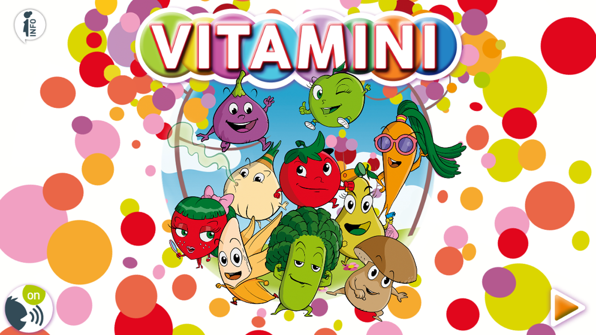

Home page
Полезна информация за витамините
Витамините са жизненоважни вещества. Те са основно два вида: мастноразтворими и водноразтворими.
За усвояването на мастноразтворимите витамини, което става по–бавно, в храната трябва да има мазнини. Мастноразтворими са витамините А, D, E, К. Всеки витамин означава сборна група. Така от група А са познати витамините А1 и А2, от група D – D1, D2, D3, D4, D5, D6 и т.н. Мастноразтварими витамини от групите D, Е, К се срещат в плодовете и зеленчуците, а от групата A са открити само в продуктите от животински произход.
Водноразтворими витамини са С, от група В, Н, Р.
Витамин А се нарича още витамина на растежа. Съдържа се в продукти от животински произход – черен дроб, масло, жълтък от яйце, мляко и др. Някои растения съдържат каротин (провитамин А), който в червата и в черния дроб се разгражда във витамин А. Каротинът се всмуква в червата само при наличност на мазнини. Той осигурява нормално зрение, растеж на младия организъм, развитие на зъбите и костите, укрепва кожата и лигавицата, регулира дейността на хормона на щитовидната жлеза при обмяната на веществата, оказва противосклеротично действие и др. Възрастният човек се нуждае дневно от 0,9 до 3 мг витамин А. Плодовете съдържат малко количество каротин, с изключение на кайсиите, шипките, сливите, касиса. Повече каротин съдържат зеленчуците – морковите, червените чушки, доматите, магданозът, зеленият лук, спанакът, салатата, брюкселското зеле, тиквичките и др. Каротинът в растението се увеличава значително при торене на почвата с азотни и фосфорни торове. Витамин D се нарича още противорахитичен. Взема участие в образуването на растежа на костите, зъбите, регулира използването на калция и фосфора. В зеленчуците се съдържа под формата на провитамин D, който под действието на ултравиолетовите лъчи се превръща във витамин D. Според някои автори превръщането става върху кожата и от там се приема от организма. Поради това се препоръчва кожата на кърмачетата да не се мие прекалено със сапун. При липса на витамин D се развива болестта рахит. При нея костите остават меки и се изкривяват поради недостатъчно съдържание на калциеви и фосфорни соли в тях. Човешкият организъм се нуждае дневно от 0,01 до 0,02 мг витамин D. Източници на провитамин D са дрождите, зелето, спанакът и др., а богат източник на витамин D е рибеното масло. Витамин Е взема участие в дейността на жлезите с вътрешна секреция и особено на половите жлези, влияе върху обмяната на веществата, регулира разпределението на мазнините и водата в организма, осигурява правилното функциониране на мускулната и нервната система. Липсата му води до безплодие и спонтанни аборти. Установено е, че витамин Е запазва добре витамин А и затова, когато има недостиг на витамин Е, се наблюдава и недостиг на витамин А. Човешкият организъм се нуждае дневно от 10 до 25 мг витамин Е. В по-големи количества той се намира в житните зародиши, в листните зеленчуци, в зеления грах, в морковите, в ядките на бадема, в ореха и др. Витамин К подпомага съсирването на кръвта. Освен от храната той се получава в достатъчно количество и от чревните бактерии. Ето защо К-авитаминозата може да настъпи при продължителна употреба на сулфамидни препарати и антибиотици, които унищожават чревните бактерии. Дневната нужда от витамин К за възрастен човек е 4 мг, а за бременни жени – до 20 мг. Витамин К се съдържа във всички зелени части на растенията. В по-голямо количество се съдържа в зелето и особено в цветното, копривата, морковите, спанака, тиквичките и др. Витамин К принадлежи на групата на мастнорастноразтворими и хидрофобни, необходими за синтеза на белтъци, осигуряващи достатъчно ниво на коагулация. Като химично съединение е производно на 2-метил-1,4-нафтохинон. Играе съществена роля при обмяна на веществата в костите и съединителната тъкан, също така и при правилното функциониране на бъбреците. При всички тези случаи витаминът спомага усвояването на калция и взаимодействието на калция с витамин D. Открити са структури в белия дроб и сърцето, които не биха могли да бъдат синтезирани без помощта на витамина.